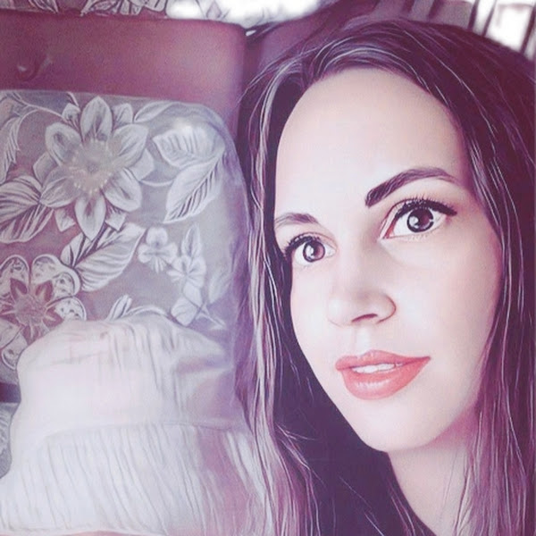
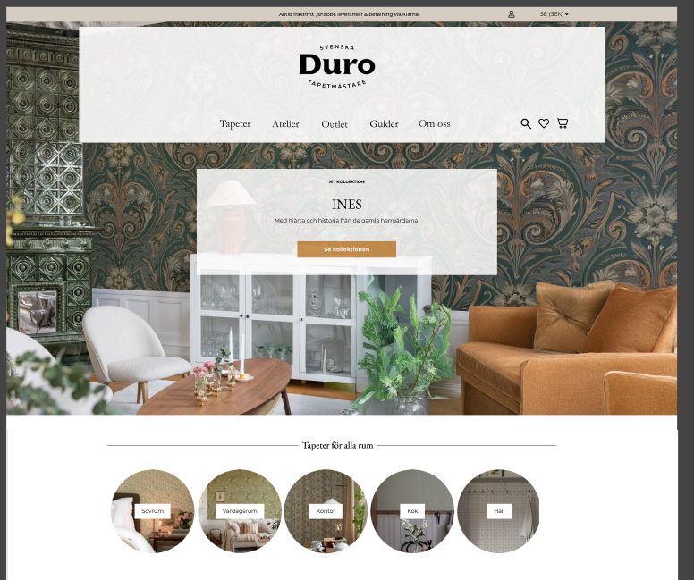
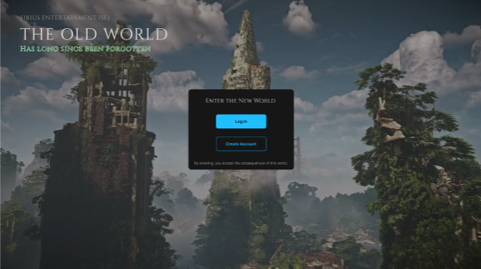

UX/UI designer · Sweden
Designing for people, not just screens.
I'm Diana. I bring together user research, thoughtful interfaces and a background in development to make digital experiences clearer and easier to use.
I also write fiction and build playful worlds. Both have taught me to pay attention to how people think, feel and find their way through a story.

Selected work
A closer look at what I do.
Five projects, different challenges. Each one taught me something about the people on the other side of the screen.

Duro
Making navigation and content easier to understand through accessibility analysis and usability testing.

ViLike
Exploring how playful feedback and clear progress can encourage children to move more.

Sellpy
Understanding barriers to second-hand shopping and finding ways to make choices feel simpler.

AcadeMedia
Working with stakeholder needs and complex workflows while respecting project confidentiality.

Sirius Entertainment
A creative studio I'm building with my sister. It brings together games, interactive storytelling, design and the technical details that make an idea playable.
Explore the projectA little about me
I care about the details people actually notice.
I began with development, then found my way into UX/UI design through a growing interest in what makes technology feel natural to use.
I enjoy the part of the process where questions become patterns: listening, mapping what gets in the way, trying an idea, and changing it when the evidence points somewhere better. My work includes research, interface design, prototyping, accessibility and usability testing.
Outside conventional product design, I write under the name D.C. Borssén and co-create Sirius Entertainment with my sister. Writing has sharpened my attention to pacing and emotion. Building games has made me think about feedback, motivation and what happens when people interact with a system rather than simply look at it.
For me, good design is thoughtful, useful and made with people in mind. It does not need to shout to be remembered.
How I work
I like to understand the problem before designing the answer.
Understand
Research, interviews, usability observations and a willingness to question first assumptions.
Make sense
User journeys, information architecture and flows that turn complex needs into something manageable.
Make & refine
Wireframes, interfaces, prototypes and testing. I value iteration more than getting everything right on the first try.
Tools & experience
Design: Figma, FigJam, Adobe XD, Photoshop, Miro · UX: Research, wireframing, prototyping, accessibility, user testing · Development: HTML, CSS, JavaScript, C#, SQL, MySQL · Creative: Blender, Fusion 360, Unreal Engine
Prefer a prototype? Open my Figma portfolio
Let's talk
Have something interesting in mind?
I'm interested in internships, junior UX/UI opportunities and meaningful collaborations. I'd be happy to hear about what you're working on.